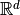

FunctionSpace¶
-
class
odl.space.fspace.FunctionSpace(domain, out_dtype=<class 'float'>)[source]¶ Bases:
odl.set.space.LinearSpaceA vector space of functions.
Elements in this space represent scalar-, vector- or tensor-valued functions on some set, usually a subset of a Euclidean space . The functions support vectorized evaluation, see the vectorization guide for details.
Attributes: byaxis_inObject to index
selfalong input dimensions.byaxis_outObject to index along output dimensions.
complex_out_dtypeThe complex dtype corresponding to this space’s
out_dtype.complex_spaceThe space corresponding to this space’s
complex_dtype.domainSet from which a function in this space can take inputs.
element_typeexamplesReturn example functions in the space.
fieldScalar field of numbers for this vector space.
is_complexTrue if this is a space of complex valued functions.
is_realTrue if this is a space of real valued functions.
out_dtypeOutput data type (including shape) of a function in this space.
out_shapeShape of function values,
()for scalar output.real_out_dtypeThe real dtype corresponding to this space’s
out_dtype.real_spaceThe space corresponding to this space’s
real_dtype.scalar_out_dtypeScalar variant of
out_dtypein case it has a shape.tensor_valuedTrueif functions have multi-dim. output, elseFalse.
Methods
_dist(x1, x2)Return the distance between x1andx2._divide(f1, f2, out)Pointwise division of f1andf2._inner(x1, x2)Return the inner product of x1andx2._lincomb(a, f1, b, f2, out)Linear combination of f1andf2._multiply(f1, f2, out)Pointwise multiplication of f1andf2._norm(x)Return the norm of x.astype(out_dtype)Return a copy of this space with new out_dtype.contains_all(other)Test if all elements in otherare contained in this set.contains_set(other)Test if otheris a subset of this set.dist(x1, x2)Return the distance between x1andx2.divide(x1, x2[, out])Return the pointwise quotient of x1andx2element([fcall, vectorized])Create a FunctionSpaceelement.inner(x1, x2)Return the inner product of x1andx2.lincomb(a, x1[, b, x2, out])Implement out[:] = a * x1 + b * x2.multiply(x1, x2[, out])Return the pointwise product of x1andx2.norm(x)Return the norm of x.one()Function mapping anything to one. zero()Function mapping anything to zero. -
__init__(domain, out_dtype=<class 'float'>)[source]¶ Initialize a new instance.
Parameters: - domain :
Set The domain of the functions.
- out_dtype : optional
Data type of the return value of a function in this space. Can be provided in any way the
numpy.dtypeconstructor understands, e.g. as built-in type or as a string.To create a space of vector- or tensor-valued functions, use a dtype with a shape, e.g.,
np.dtype((float, (2, 3))).For
None, the data type of function outputs is inferred lazily at runtime.
Examples
Real-valued functions on the interval [0, 1]:
>>> domain = odl.IntervalProd(0, 1) >>> odl.FunctionSpace(domain) FunctionSpace(IntervalProd(0.0, 1.0))
Complex-valued functions on the same domain can be created by specifying
out_dtype:>>> odl.FunctionSpace(domain, out_dtype=complex) FunctionSpace(IntervalProd(0.0, 1.0), out_dtype=complex)
To get vector- or tensor-valued functions, specify
out_dtypewith shape:>>> vec_dtype = np.dtype((float, (3,))) # 3 components >>> odl.FunctionSpace(domain, out_dtype=vec_dtype) FunctionSpace(IntervalProd(0.0, 1.0), out_dtype=('float64', (3,)))
- domain :